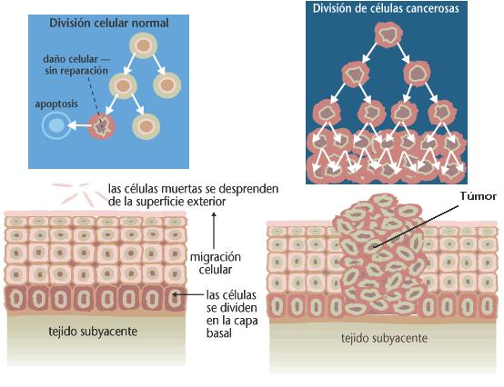
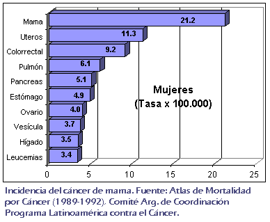
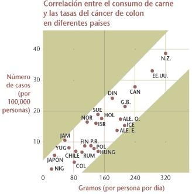
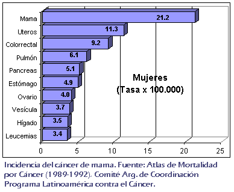
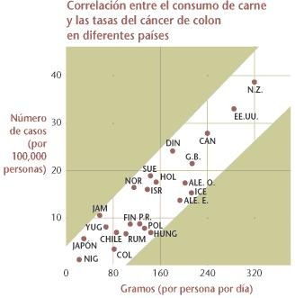
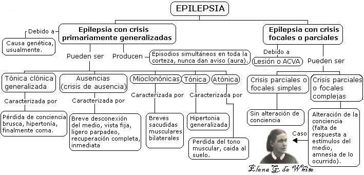
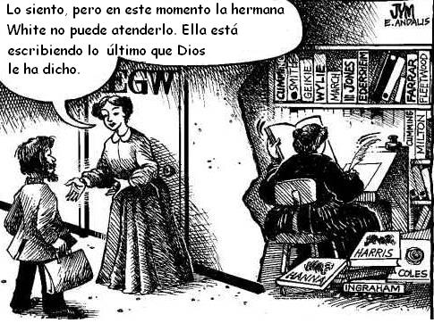

Una de las diferencias de los adventistas del séptimo día respecto a los demás cristianos, es la creencia en el “don de profecía” de la señora Elena G. de White, cofundadora de la Iglesia Adventista del Séptimo Día (IASD). Sin embargo, tras una mirada racionalista podemos afirmar que no hay pruebas para admitir que los escritos de la señora Elena G. de White se puedan deber a una causa sobrenatural. El presente texto tiene por finalidad mostrar algunos fallos de la señora White, que los adventistas se esfuerzan por justificar vanamente. Es necesario aclarar, antes de proseguir, que en ningún momento estoy “contra los adventistas”. Es diferente estar contra las ideas, que contra las personas. Los individuos merecen todo mi respeto, pero eso no significa que no pueda mostrar mi escepticismo frente a sus creencias.
En algunas ocasiones la Iglesia Adventista distribuye artículos en sus revistas para convencer a sus lectores que la señora White era una profeta. Por ejemplo, el mes de mayo de 2001 distribuyeron en su revista mensual “El centinela” un curioso artículo apologético sobre Elena G. de White. El artículo decía lo siguiente: “Ella escribió mayormente sobre la vida espiritual. Pero sus obras discuten también temas variados tales como educación, relaciones sociales y nutrición. Lo asombroso es que aunque murió en 1915 y la ciencia ha tenido un progreso enorme desde entonces en nuestra comprensión de los requisitos de la salud física, lo que ella escribió al respecto todavía es válido.” Para finalizar el autor dice: “Los miembros de la Iglesia Adventista del Séptimo Día creen que sus nociones sobre la salud espiritual y física son más que el mero resultado de adivinar bien. Ven en ella un cumplimiento de la promesa bíblica de conducción profética poco antes del regreso de Jesús”.
La anterior declaración me animó a consultar para ver si en verdad ella había recibido consejos sobre la salud que eran ignorados por la ciencia de finales del siglo XIX y principios del XX. Los resultados en verdad fueron asombrosos, pero no de la forma como lo presentan los dirigentes de la IASD.

El apologista adventista afirma en su artículo que Elena G. de White dijo que el fumar produce enfermedades. Esto es totalmente cierto, pero es necesario mencionar que la señora White nunca mencionó los tipos de cánceres que el uso del tabaco produce; jamás mencionó los productos cancerígenos presentes en el cigarrillo (alquitrán, radicales libres, etc.). La señora White tampoco habló concretamente sobre otros problemas de salud relacionados con el hábito de fumar, tales como la hipoxia fetal en madres fumadoras, o el riesgo de ataques cardíacos. Todo esto me lleva a la conclusión, en lo que a este punto se refiere, que la señora White no se adelantó en nada a la ciencia de esa época, y por tal razón tampoco hay indicio que su “fuente de información sobrenatural” fuese lo suficientemente inteligente como para adelantarse en la explicación sobre el daño del tabaco a los alvéolos pulmonares (enfisema pulmonar).
Lo verdaderamente curioso es que la señora White realizó una serie de explicaciones a hechos naturales que resultaron ser totalmente falsos o poco precisos. Pero es extraño que los señores de “El centinela” no los mencionan. Por esta razón presento algunos de ellos aquí.
Declaraciones que hacen dudar de Elena G. de White como profetisa
Declaraciones equivocadas y poco precisas de la señora White en el campo de la salud
1. El uso de pelucas genera locura
“La moda recarga las cabezas de las mujeres con trenzas y almohadillas artificiales… que calientan y excitan los centros nerviosos de la médula espinal en el cerebro… La acción de la sangre sobre los órganos inferiores o animales del cerebro causa una actividad antinatural y una tendencia hacia la temeridad en la moral, y la mente y el corazón están en peligro de corromperse. Al excitarse y fortalecerse los órganos animales, la moral se debilita. Los poderes morales e intelectuales de la mente se convierten en siervos del animal… Muchos han perdido la razón y se han vuelto locos sin remedio después por seguir esta moda deformadora.” “Words to Christian Mothers, No. 2,” Health Reformer 6 (Oct. 1871):12 1.
Si bien es cierto que en ninguna iglesia adventista se afirma esto. Me causa mucho asombro que miles de personas crean que Elena G. de White era una profeta después de encontrar declaraciones como estas. Esta declaración es completamente falsa, pues no existe ninguna relación de causa y efecto entre el uso de pelucas y el desarrollo de locura. A mi parecer creo que este consejo está ligado al hipermoraslismo que la señora White ponía en el vestir y en las actividades recreativas. ¿Y si este consejo, a todas luces falso, qué seguridad puede haber sobre su sobrenatural don?
3. El cáncer se produce por el consumo de carne con gérmenes de cáncer (La relación entre comer carne y el cáncer)
“… la práctica de comer mayormente carne hace que se contraigan enfermedades de todo género: cáncer, tumores, escrófula, tuberculosis y una cantidad de otras afecciones similares” “Continuamente sucede que la gente come carne que llena gérmenes de tuberculosis y cáncer. Así se propagan estas enfermedades y otras también graves” Consejos sobre el régimen alimenticio, página 464.
“Por la luz que Dios me ha dado, sé que la prevalencia de carne y tumores se debe a un sistema de vida vulgar a base de carne”. Consejos sobre el régimen alimenticio, página 463.
En la cita de la página 464 de “Consejos sobre el regimen alimenticio” me causa curiosidad que mencione “cáncer” y “tumores” como dos enfermedades separadas. Hoy sabemos que un túmor es una masa creciente de tejido que aumentan gradualmente en el número de células con capacidad para dividirse descontroladamente. El desarrollo de tumores es una etapa del desarrollo del cáncer que se da después de la perdida del control de la división celular de una célula, y la no eliminación de la misma, y previó a la metástasis o invasión de este tipo de células “rebeldes” por el cuerpo. Algunos de los adventistas con los que he discutido esta cuestión dicen que no ven problema en estas declaraciones ya que están dentro del contexto de su época ¿Pero por qué en sus visiones su “ángel guía” o el mismo Jesús que le hablaba no le aclaro estos puntos? ¿No habría tenido mayor aceptación en el mundo como profeta verdadera? y más importante aún, de haber revelado técnicas para detectar tempranamente el cáncer ¿no habría contribuido a mejorar el bienestar físico de la humanidad? Estos interrogantes son los que hacen que los escépticos tomemos con incredulidad el don profético de la señora White.
La parte que dice “Continuamente sucede que la gente come carne que lleva gérmenes de… cáncer” Plantea dos interrogantes 1. ¿Existen gérmenes de cáncer? y 2. De existir “gérmenes de cáncer” ¿se transmiten estos principalmente por el consumo de carne?.
En el primer punto he recibido la respuesta, por parte de personas adventistas, de que la ciencia ha descubierto agentes virales que producen cáncer. Esto es cierto. Algunos de estos virus y los tipos de cáncer que produces son: El virus de Epstein-Barr (abreviado VEB) asociado con el linfoma de Burkitt. el virus del papiloma humano asociado al cáncer de cuello uterino, el virus de hepatitis B asociado al cáncer de hígado, el virus linfotrópico de células T humano asociado a la leucemia de células T en adultos, y el herpes virus asociado con sarcoma de Kaposi se relaciona con el sarcoma de Kaposi. También la bacteria Helicobacter pylori se asociado con el cáncer de estómago. El descubrimiento de estos factores biológicos en el desarrollo del cáncer han hecho que muchos adventistas consideren que este punto ya se ha aclarado y que la ciencia ha corroborado las explicaciones de su lideresa cofundadora. Pero ¿se contraen estos virus por el consumo de carne? La respuesta es no. Por ejemplo el virus de la hepatitis B se contrae por vía sanguínea y sexual, el virus del papiloma humano por contacto sexual, y el VEB se contrae sobre todo por contacto sexual con las zonas lesionadas (por lo que también se engloba dentro de las E.T.S.), también se dan caso de transmisión materno-fetal, la transfusión sanguínea y contacto con semen. No hay una relación, ni siquiera indirecta, entre el consumo de carne y el desarrollo de cáncer de hígado debido al virus de hepatitis B. Debo apuntar que las vacas no comen carne y también pueden desarrollar tumores!
También es importante comentar que enfermedades como el Sarcoma de Kaposi no son muy frecuentes, estas se presentan en personas inmunodeprimidas, ya sea tras un transplante o por VIH, y el linfoma de Burkitt es un tipo de cáncer algo escaso. Siendo estos tipos de cáncer menos frecuentes que otros más comunes, como el cáncer de seno o el pulmón, ¡¿cómo entonces afirmar que la prevalencia de cáncer se debe al consumo de carne?.
Sin embargo, faltaría a la verdad si no mencionase que hay una relación directa entre el consuno de carne y el cáncer de colón. Esta situación es más corriente en Occidente con el aumento de la cultura de la comidas rápidas. También el consumo de grandes cantidades de grasas y carbohidratos están relacionados con el mismo tipo de cáncer. ¿Dado que en el cáncer colorrectal hay una relación podemos decir que la señora White tenía razón? Yo creo que no. Simplemente hubo una coincidencia, que resultó afortunada para todos aquellos adventistas que limitan el concumo de carne y carbohidratos. Para esto me baso que no se cumplen dos cosas: La existencia de los “germenes de cáncer” y que el consumo de carne se puede relacionar directamente con un tipo de cáncer (el segundo de importancia en Occidente) pero no en todos, como ella argumentaba.
 
Para el desarrollo del cáncer, sabemos hoy, y no de boca de la inspirada Elena G. de White, que las causas de este pueden clasificarse como biológicas, físicas y químicas. Dentro de las causas biológicas tenemos los virus y la bacteria antes mencionados. Causas físicas como la radiación ultravioleta (radiación de baja potencia) asociada al cáncer de piel, y los rayos X, gamma, o por sustancias químicas tales como el benceno, el aminobenceno y benzoantraceno (presentes junto a muchos otros en el humo del tabaco) entre otras sustancias. Otros apologistas de la profeta dicen que el descubrimiento de sustancias cancerígenas como el benzopireno y el benzoantraceno, que se pueden formar en alimentos quemados corrobora los escritos de la señora White. Nada más equivocado. Perfectamente podría haber dico “El Señor me mostró que no deben consumirse partes de alimentos que se hayan quemado” y no obligar al texto a que “germenes” signifique sustancia química. Además que esto sería sacar de contexto el término germén. A decir verdad, en los escritos revelados no encontré ninguno en que ella lograse distinguir entre bacteria, virus o protozoo. Todo lo que le “sonaba” microscópico ella lo llamaba germen. Además como no existe un microorganismo que se relacione con todos los tipos de cáncer podemos decir que su expresión “gérmenes de cáncer” denota su falta de conocimiento en el tema. Mi respuesta a las dos preguntas arriba planteadas es no.
Algunos adventistas han comentado que no solo Elena G. de White era ignorante sobre los virus, sino todos los médicos de la época. Lo cual es totalmente cierto. Los virus, esas elementos genéticos que no se pueden reproducir sin infectar una célula, fueron identificados a finales del siglo XIX e inicios del XX. En 1892 el científico ruso D. Ivanonowsky ya había demostrado que el agente causal de la enfermedad del mosaico del tabaco era “filtrable”, es decir era tan pequeño que podía pasar por los poros de los filtros que eran capaces de retener bacterias. El microbiólogo holandés Martinus Beijerick dió un paso adelante en el descubrimiento de los virus al encontrar que estos tenían algunas características de los seres vivos. Ya en el año en el que murió la señora White, 1915, el biólogo británico F.W.Twort y dos años más tarde, el francés F. d’Herelle descubren los virus bacterianos, conocidos como bacteriófagos. La relación entre los virus y el cáncer inició con su demostración en 1810 con el patólogo Francis Peyton Rous, quien decidió inyectar a un grupo de gallinas con un filtrado obtenido de un túmor procedente de otra gallina. Estos trabajos plantearon la hipótesis de microorganismos más pequeños que las bacterias y su importancia en la generación de algunas enfermedades.
Los defensores de la señora White aducen que en su tiempo la medicina estaba poco adelantada en oncología y microbiología, y que ella solo contaba con un tercer grado de educación básica, razón por la que no puede exigírsele una mayor precisión. Entiendo estos argumentos, y deseo dejar claro que no ataco a la persona en sí, sino la idea que se le considere una persona que escribia, predicaba y aconsejaba porque Dios (el de la Biblia) le mostraba visiones. ¿Si este Dios supuestamente conoce el funcionamiento de la división celular, el origen del cáncer, su diagnostico y tratamiento (no olvidemos que los cristianos creen que es omnisapiente), cómo es posible que al encontrar una mensajera (como se le suele designar en los círculos adventistas) no le diese detalles de fisiología claramente nuevos, impactantes, dignos por su trascendencia de una revolución médica sin precedentes? ¿Hablaría el gran Creador sobre cuidados sobre la salud mencionando solo algunas causas y no todas? ¿Ha habido algún fisiólogo que haya dicho: Caramba, estas revelaciones hechas a finales del siglo XIX eran tan revolucionarias que sin duda aplicarían para un Nóbel en medicina?. No estoy diciendo que solo aceptaría como profeta a doña Elena si hubiese recibido un premio Nóbel de medicina. Recalcó que es bastante sospechoso que tras oir y ver en visiones consejos sobre la salud del mísmisimo Dios no se presentasen aspectos verdaderamente novedosos para su época que hubieran demostrado, más allá de toda duda razonable, que sus nuevas explicaciones y ampliaciones venían de una fuente que todo lo sabe. Es una duda similar a la que me surge con aquellos que atestiguan haber sido contactados y raptados por extraterrestres (mucho más avanzados que nosotros), pero que solo dan como evidencia un mensaje ya por todos conocido tal como que debemos ser buenos y que vamos a destruir el planeta con nuestros excesos de consumo, pero nunca muestran algo realmente de origen extraterrestre como prueba, como una aleación de metal hecha en gravedad 0 o algún avance tecnológico que mostrase ser proveniente de las aludidas naves.
Es en este esceptismo que surgió en mi, desde que hacía parte de las filas adventistas, preguntas tales como ¿por qué si la señora White tenía una comunicación con Dios tan estrecha, no nos legó la información de forma más clara, más profunda, de forma que pudiera haber un impacto grande en la práctica de la medicina y el bienestar de la humanidad? Para hacer más clara mi postura imaginense que la señora Elena White en lugar de decir “Por lo que Dios me ha mostrado sé que la carne causa cáncer y tuberculosis” dijese: “Dios me mostró que la causa de la tuberculosis es un microbio (haciendo referencia al Mycobacterim tuberculosis) que puede destruirse con sustancias antimicrobianas (no espero que hubiese acuñado el término antibiótico). Una de ellas puede extraerse de un hongo (haciendo alusión al Penicillium), también se me mostró que hay microbios más pequeños que las bacterias que infectan las células para poderse reproducir y que son responsables de varias enfermedades humanas (luego explicara que son los causantes de la rubeola, el sarampión, la viruela, la fiebre amarilla), de animales y vegetales (luego explicase como aislarlos, y después explicara la creación de las vacunas). Dios me mostró que debía pedirle a Fulano de tal (supongamos Francis Peyton Rous) para que ponga a prueba estas palabras y para que cree según las indicaciones que se darán a continuación unas vacunas que inmunizaran a los humanos contra las enfermedades tan graves que son causadas por los microorganismos filtrables (los virus).
Ahora imaginemos que efectivamente la IASD pone esto en conocimiento del gobierno de los Estados Unidos y este le pide a Francis Peyton Rous, u otro científico importante de la época, que investigue lo dicho por la señora White. Sorprendentemente este descubre los agentes etiológicos de la viruela, el sarampión, la rubeola, la fiebre amarilla, las paperas, la varicela, el herpes y al seguir las instrucciones reveladas se empieza a vacunar a las personas contra estas enfermedades dando un resultado sin precedentes. ¿Para que esperar casi un siglo más para erradicar la viruela?. Imaginemos que las revelaciones de la señora White no solo se limitaron a las enfermedades causadas por virus, imaginemos que el desarrollo de antibióticos logra curar la enfermedad más temida de su época, la tuberculosis. Tendría entonces un indicio claro que estos conocimientos que llegaron a una señora con tan solo tercer año de escolaridad y por medio de visiones deben venir de algo o alguién con mucho conocimiento, entonces sería altamente probable que aceptara que es profeta de Dios y que, como dice la revista adventista al inicio citada “lo asombroso es que aunque murió en 1915 y la ciencia ha tenido un progreso enorme desde entonces en nuestra comprensión de los requisitos de la salud física, lo que ella escribió al respecto todavía es válido”. Así las cosas serían diferentes, el escepticismo de los racionalistas actuales no tendría cabida.
También quiero dejar claro que mi intención no es atacar el estilo de vida vegetariano. De hecho soy conciente que muchas de las medidas preventivas que los adventistas llaman “mensaje pro-salud o temperancia” tales como evitar el alcohol, el tabaco, los narcóticos y las grasas de origen animal han hecho de los adventistas una de las poblaciones más sanas del mundo, junto con los sardos, de Cerdeña, Italia y los okinaweses de Japón. [1] Pero el hecho que estos consejos sean razonables no significa que Elena G. de Dios es una profeta de Dios, ni que la IASD sea depositaria de la verdad absoluta, de la misma manera que no puedo considerar que José Smith sea profeta de Dios, ni que la Iglesia de Jesucristo de los Santos de los Últimos Días (IJSUD) sea la iglesia verdadera depositaria de la verdad absoluta por el hecho de tener consejos saludables como evitar el alcohol y el tabaco (la ciencia ha descubierto lo extremadamente dañiño que es el tabaco y como se ha vinculado el consumo de alcohol con el cáncer de colón). Los mormones llaman a tales reglas “Palabra de Sabiduría”. Algo similar podría decir de los Hare Krisna, que también tienen consejos pro-salud similares a los adventistas.
Un ejemplo de que se puede seguir habitos saludables sin aceptar a la señora White como profeta nos viene de la época del nacimiento del adventismo. Jhon Harvey Kellogg, un médico preocupado por los hábitos saludables y que después adquiriria fama por ayudar a introducir el consumo de cereales en el desayuno (con los cereales de su compañía) fue amigo personal de los White. Fue adventista por un tiempo pero luego se retiró de la IASD. Kellogg nunca creyó en el don profético de la señora White. Según cuenta el pastor Rea en el su libro “La mentira White” capitulo 11:
No creo en su infalibilidad, y nunca creí. Hace ocho años, le dije cara a cara que algunas de las cosas que me había escrito como testimonios no eran verdaderas, que no estaban en armonía con los hechos, y que ella misma lo había averiguado. Tengo una carta de ella en la que explica cómo es que me envió ciertas cosas…. Sé que la gente va a ver a la Sra. White con algún plan o proyecto que desean llevar adelante con su aprobación, y se levantan y dicen: “El Señor ha hablado.” Y sé que eso es fraude, y aprovecharse injustamente de las mentes y conciencias de la gente… yo no simpatizo con eso, y se lo dije a W. C. White hace mucho tiempo. John Harvey Kellogg, “An Authentic Interview,” 7 de octubre de 1907, pp. 23-39
El escepticismo es clave para analizar las ideas religiosas, filosóficas y científicas, y lo que he encontrado en las diferentes religiones es su negativa a cambiar tras las evidencias que le son contrarias a sus dogmas más queridos, como es el caso de el don profético de la Sra White para los adventistas.
4. La tuberculosis se propaga gracias al consumo de carne con gérmenes de tuberculosis (La relación entre comer carne y la tuberculosis)
Consejos sobre el régimen alimenticio, página 464 (Texto mencionado en el punto 4).
No es de extrañarse que la señora White se preocupara tanto por la tuberculosis, dado que esta enfermedad constituía una emergencia sanitaria por aquellos días. El Mycobacterium tuberculosis, agente infeccioso de la tuberculosis, se contrae principalmente por vía respiratoria, por ejemplo, si Ud. respira el mismo aire que haya sido contaminado poco tiempo después de haber tosido un tuberculoso. En realidad el contagio de tuberculosis por alimentos es casi nulo, especialmente si se tienen en cuenta medidas higiéncias. Existe la tuberculosis bovina la cual es consecuencia de la exposición al ganado tuberculosos, por lo regular por ingestión de leche cruda o productos lácteos no pasteurizados, y a veces por la diseminación de bacilos llevados por el aire, a granjeros y personas que manipulan animales. Notemos que la señora White no habla de los productos lácteos, ni tampoco hace recomendaciones para destruir los microorganismos por el método que hoy conocemos como pasteurización. Lo que discuto es que sea el consumo de carne la principal causa de la adquisición del agente etiológico de la tuberculosis.
La señora White también relacionó el desarrollo de la tuberculosis linfonodular o escrofula con una causa totalmente diferente al microorganismo que la causa:
El vestido embarrado y húmedo se pone en contacto con los tobillos, que no están suficientemente protegidos, y los enfría pronto; esta es una de las grandes causas productoras de catarros y tumefacciones escrofulosas, y pone en peligro la salud y la vida. ** Mensajes selectos, tomo II, página 542**
Por esta razón considero que las declaraciones hechas por la Sra. White en relacionar el consumo de carne como la causa principal de la tuberculosis es falsa.
5. Todas las enfermedades inflamatorias se deben principalmente al consumo de carne
“El cáncer, los tumores y todas las enfermedades inflamatorias son producidas mayormente por el consumo de carne” (énfasis mío) Consejos sobre el régimen alimenticio, página 463.
Actualmente denominamos las enfermedades que involucran algún tipo de inflamación con la terminación “itis”, por ejemplo: bronquitis, gastritis, hepatitis, apendicitis, etc. No tengo nada en contra de los vegetarianos; lo inaceptable es engañar a la gente con supuestas “revelaciones divinas” como éstas. Al contrario de lo que dice Elena de White, y para poner un ejemplo, está comprobado que muchas gastritis son producidas por la infección de la bacteria Helicobacter pylori.

6. Dar carne a los niños nerviosos los corrompe y los hace perder las prácticas virtuosas
“Los efectos de que un régimen basado en carne tendrá sobre hijos nerviosos no tenderá a hacerlos de un temperamento dulce, sino malhumorados, irritables, apasionados e impacientes frente a las restricciones; se pierden las prácticas virtuosas, y la corrupción destruye la mente, el alma y el cuerpo.” Mensajes selectos, tomo III, página 331
El desarrollo del caracter humano no se relaciona con el consumo de carne. Existen más prubas que relacionan el ambiente de crianza, el afecto, la atención y demás cuidados con el desarrollo de prácticas virtuosas, para usar la expresión de la Sra. White. Tal declaraci{on es sin duda falsa.
Declaraciones equivocadas de la señora Elena G. de White en otros campos de la ciencia
1. El carbón y el petróleo se encienden bajo la Tierra y producen los terremotos y las erupciones volcánicas
“…En ese tiempo (en el diluvio) inmensos bosques fueron sepultados. Desde entonces se han transformado en el carbón de piedra (…) y han producido también inmensas cantidades de petróleo. Con frecuencia el petróleo se enciende y arde bajo la Tierra. Esto calienta las rocas, quema la piedra caliza y derrite el hierro. La acción del agua sobre la cal intensifica el calor y ocasiona terremotos, volcanes y brotes ígneos” Historia de los patriarcas y profetas, página 99.
En geología se conoce como una falla a una línea de fractura a lo largo de la cual una sección de la corteza terrestre se ha desplazado con respecto a otra. La dirección de este movimiento puede ser vertical, horizontal o una combinación de ambas. Hoy sabemos que los sismos se deben al rompimiento abrupto y repentino de una falla.

La relación entre fallas y terremotos se estableció claramente hasta principios del siglo XX. Fué tras el terremoto que sacudió la región de San Francisco el 18 de abril de 1906 que H. Reid dirigió una comisión para investigar el suceso. La comisión informó que la sacudida fue provocada por un deslizamiento de cinco metros sobre una porción de la falla de San Andrés de varios cientos de kilómetros. La relación quedaba establecida. Además, la Comisión distingió tres tipos de deslizamientos. El primero se dá cuando los bloques son sometidos a fuerzas de estiramiento, estos disminuyen de grosor y se alejan siguiendo un plano inclinado: se habla en tal caso de fallas normales, y es este tipo de movimiento el que abré rifts como en el Mar Rojo. El segundo se da cuando los bloques son comprimidos, generando acortamiento y se levantan las zonas deformadas. El tercer tipo de movimiento se da por los desplazamientos horizontales: un plano se desliza contra otro en un plano vertical sin crear relieve. La falla de San Andrés, en California, es el ejemplo más conocido.
Los terremotos y las erupciones volcánicas son efectos superficiales de la actividad interna del planeta. Hoy sabemos que el motor del vulcanismo y los sismos el calor interno desprendido por la radiactividad natural de las rocas profundas, especialmente las del manto. Como las rocas son muy poco conductoras del calor estas suben en forma líquida por medio de grandes corrientes de convección que mezclan todo el manto. Estos lentos movimientos, del orden de 10 cm/año, son los que generan el desplazamiento de las placas tectónicas en la superficie del planeta. Las fracturas de las fallas debido a estos movimientos son la real causa de los sismos.
Los volcanes, esas estructuras geológicas que arrojan magma o roca fundida junto con gases también se deben al calor interno del planeta que genera magma y gases los cuales salen de la corteza terrestre a través de los lugares más debiles de esta.
La idea mencionada por la señora White, de que estos fenómenos se deben a la combustión del petróleo y el carbón son falsas y están relacionadas con las ideas corrientes que sobre estos fenómenos se tenían en el siglo XIX. Debe tenerse en cuenta que la explicación dada por la señora White sobre el vulcanismo fue hecha en 1864, mientras que el trabajo de H. Reid se llevó a cabo en 1906, la teoría de la tectónica de placas fue formulada por Alfred Waggener de 1908-1912 y totalmente fue aceptada en la década de 1960 tras el estudio del fondo marino con técnicas de datación. Pienso que este tema hubiese sido una excelente oportunidad para que la señora White se hubiese adelantado a su tiempo y demostrara que en realidad “algo inefable” le enviaba sus visiones. Pero, ¿qué aspecto nuevo y revelador hay en las declaraciones de la señora White sobre el origen de los terremotos y el vulcanismo? Claramente la respuesta es ninguno. Es más el terremoto de San Francisco, estudiado por H. Reid fué atribuido por la señora White a un juicio de Dios sobre la pecaminosa ciudad.
2. Las caderas estrechas de las mujeres son producto de la herencia de caracteres adquiridos
“Algunas mujeres poseen en forma natural cinturas pequeñas. Pero en lugar de considerar estas formas como hermosas, deberían ser consideradas defectuosas. Estas cinturas de avispa podrían haberle sido transmitidas de sus madres, como resultado de su indulgencia en la práctica pecaminosa de usar corsés apretados, y como resultado en una respiración imperfecta. Review and herald, 31 octubre 1971; “Words to christian mothers,” The health reformer, octubre 1871, página 121, y noviembre 1871, páginas 154-157; Healthful living, 1897, página 58
La herencia de los caracteres adquiridos era una creencia que afirmaba que ciertas características que desarrollase un organismo al realizar ciertas actividades podrían pasar a su descendencia. Este hipótesis fue postulada con fuerza por el naturalista francés Jean Baptiste Lamarck. Hoy podemos decir, gracias a los estudios en el campo de la genética, se puede decir que esta declaración es contundentemente falsa.
3. La señora White afirmó que era posible la formación de nuevas especies, y razas de seres humanos por medio de la cópula entre seres humanos y bestias
“Pero si hubo un pecado, por encima de cualquier otro, que requería la destrucción de la raza por medio del diluvio, fue el crimen degradante de la amalgama del hombre y la bestia, un crimen que desfiguró la imagen de Dios y causó confusión por todas partes.” Spiritual gifts (Dones espirituales), tomo 3, página 64, 1864
La afirmación iba encaminada a explicar las especies fósiles que se estaban descubriendo en el siglo XIX y que ponían en aprietos al creacionismo. Por otro lado estos textos han sido usados para explicar el origen de razas humanas diferentes a la caucásica (supuestamente la que dios creo en el Edén).
“Cada una de las especies de animales que Dios había creado fue preservada en el arca. Las especies confusas que Dios no creó, y que eran el resultado de la amalgama, fueron destruidas por el diluvio. Desde el diluvio, ha habido amalgama entre hombres y bestias, como puede verse en la interminable variedad de especies de animales y ciertas razas de hombres.” Spiritual gifts (Dones espirituales), tomo 3, página 75, 1864
Las anteriores declaraciones de la señora White han sido un verdadero dolor de cabeza para la IASD, pero ¿qué esta diciendo aquí la señora White?
Que es posible cruzar individuos de dos especies distintas y formar descendencia fértil, y crear así una nueva especie.
Que este cruce es posible entre la especie humana y cualquier otra especie del reino animal.
La existencia de ciertas razas humanas actuales se pueden explicar por estos cruces.
Lo anterior también es cierto para una “gran variedad de animales”, lo cual es su explicación para la diversidad zoológica.
En su tiempo, muchos de sus detractores la acusaron de enseñar “bajo cuerda” que las personas de color no eran totalmente humanos, razón por la cual, cuatro años más tarde (en 1868), salió en su defensa Uriah Smith (personaje importante en el desarrollo de la IASD) con el libro The Visions of Mrs. E. G. White (Las visiones de la Señora E. G. White) en el que afirmaba que la “profetisa” nunca había dicho que la raza negra era producto de relaciones sexuales de humanos con bestias; no obstante, supone que esto es cierto para los bosquimanos, los hotentotes (nativos de Sudáfrica) y los indígenas digger de Norteamérica. He aquí la cita:
“Ahora, siempre hemos supuesto que cualquiera que sea llamado un hombre es considerado un ser humano. La visión se refiere a todas estas clases como razas de hombres. ¡Y sin embargo, a pesar de esta clara afirmación, algunos tontamente afirman que las visiones enseñan que algunos hombres no son seres humanos! Pero, ¿niega alguno la afirmación general contenida en el extracto que antecede? No. Si lo hicieran, podrían ser fácilmente silenciados haciendo referencia a casos tales como los de los salvajes bosquimanos de África, algunas tribus hotentotes, y quizás los indios Digger de nuestro propio país, etc. Además, los naturalistas afirman que la línea de demarcación entre la raza humana y la raza animal se perdió en la confusión. Es imposible, como ellos afirman, decir exactamente dónde termina la raza humana y dónde comienza la raza animal”
La señora Elena G. de White nunca corrigió lo dicho en su supuesta visión revelada, pues tuvo 47 años para hacerlo antes de morir en 1915. En lugar de esto, distribuyó 2000 copias del libro racista de Uriah Smith en un congreso de 1868 y fue publicitado por su esposo Jaime White en la revista Review and Herald:
“La Asociación acaba de publicar un folleto titulado Las Visiones de la Sra. Elena G. White: Una Manifestación de los Dones Espirituales de Acuerdo con las Escrituras. Fue escrito por el editor de la Review. Mientras leía el manuscrito cuidadosamente, me sentí agradecido con Dios de que nuestro pueblo pudiera tener esta inteligente defensa de los puntos de vista que ellos tanto aman y atesoran, y a los cuales otros desprecian y se oponen.” (Agosto 15, 1868).
El texto del esposo de doña Elena es claro al exponer su aprobación al libro con párrafos racistas de Uriah Smith, mientras que Elena G. de White no se retractó sobre la veracidad de la amalgama. Pero si usted va hoy en día a comprar el libro de Uriah Smith no lo encontrará en ninguna librería adventista pues calladamente lo han retirado del mercado, después de toda “la ampolla” que levantaron estas declaraciones por parte de la crítica. (Anteriormente, la cita de la “amalgama” aparecía en el libro Patriarcas y Profetas, pero fue retirada calladamente, aunque Elena no lo hubiese aprobado en vida).
Es muy probable que Elena G. De White haya caído en el mismo prejuicio racial de se época, aunque esto es algo que los pastores adventistas de hoy y los investigadores del Intituto de Investigación de las Geociencias (Instituto creacionista adventista) tratan de ocultar a toda costa, diciendo algunas veces que ella hablaba de “amalgama” entre hombres y hombres por un lado y bestias con bestias. Pero ¿cómo podría ser “abominable” una relación sexual de un humano con otro humano? El sentido de lo que Elena quiso decir es obvio: muchas especies animales y muchas razas de hombres (luego avaló la inclusión de los bosquimanos y otros pueblos autóctonos) son producto del cruce entre organismos de diferentes especies.
También noto que las declaraciones de la señora Elena G. de White van encaminadas a dar explicación a la diversidad zoológica sin recurrir a la Evolución biológica. Esta declaración impactó al fundador del creacionismo moderno, George Mac Cready Price. Price en la edición de la revista “The Ministry” de abril de 1931 dijo, con relación a los escritos de Elena, que le gustaría alterar ligeramente la afirmación de Elena G. de White para que quede esta manera: “Desde el diluvio, ha habido amalgama del hombre y (de) la bestia, como puede verse en la casi interminable variedad de especies animales y en ciertas razas de hombres”.
El señor D. E. Robinson, quien por muchos años fue el secretario personal de Elena G. de White, estaba en desacuerdo con Price: En un escrito titulado Amalgamation Versus Evolution (Amalgama vs. Evolución), dijo que el hecho de que Price insertara la palabra “de” en la declaración de Elena G. de White violentaba el significado obvio que la misma autora se proponía.
Los comentarios racistas en el siglo XIX eran muy comunes no solo entre los creacionistas, sino también entre los científicos. El paleontólogo e historiador de la ciencia Stephen Jay Gould nos cuenta al respecto: “Así el principal biólogo de América (refieriéndose a Louis Agassiz) cayó firmemente en el lado equivocado de un debate que llevaba arrasando la nación una década cuando el llegó a decir: ¿fue Adán el progenitor de todos los hombres, o solo de los hombres blancos? ¿Son los negros y los indios nuestros hermanos o simplemente se nos parecen?” [2]
Si Louis Agassiz fue víctima del prejuicio, ¿por qué no lo sería Elena G. de White? Cabe anotar que Agassiz fue el último biólogo serio que no fue darvinista (en esta misma línea, puede leer sobre el prejuicio racista de José Smith, el fundador del mormonismo en José Smith y el mormonismo).
4. La masturbación causa locura, cáncer e incluso ceguera
En los escritos de la señora White no se encuentra la palabra “masturbación”, pues ella se refería a esta práctica con los términos “auto-abuso” y “vicio secreto” entre otros. Como este punto ha sido muy bochornoso para los adventistas, y algunos han argumentado que en este punto no hablaba siendo inspirada por Dios se muestra la siguiente cita en la que afirma haber visto un caso en visión:
“Yo vi que la familia del Hno. Daigneau necesita que se haga un gran trabajo con ellos. Samuel y Charlie han ido muy lejos en este crimen del auto-abuso; Esto es cierto especialmente especialmente para Charlie, quien ha ido tan lejos en la práctica de este pecado que su intelecto se afecta, su vista se debilita, y la enfermedad es la atadura de sí mismo. Satán tiene casi de lleno el control de la pobre mente de ese muchacho. Sus padres no se han despertado para ver la maldad y sus resultados. Su mente está embotada, su conciencia se endurece, sus sensibilidades morales se entumecen, y él será una víctima lista para ser conducida en el pecado y crimen por sus perversas asociaciones.” Testimonio especial para la Iglesia de Battle Creek Church, Pág.21 Párrafo 1
“Muchos se hunden en una sepultura temprana, mientras otros tienen la fuerza y suficiente de constitución para pasar esta prueba. Si la práctica se continúa desde las edades de quince años en adelante la naturaleza protestará contra el abuso que ha sufrido, sufrirá, y los hará pagará la pena por la transgresión de sus leyes, especialmente desde las edades de 30 a 45, con dolores numerosos en el sistema, y diversas enfermedades, teniendo efecto en el hígado y pulmones, causando neuralgia, reuma, afecciones a la médula espinal, enferma los riñones, y causa humores cancerosos.Algunos de las maquimarias finas de la naturaleza da manera dejan la tarea más pesada a las restantes para desempeñar el arreglo el arreglo fino de la naturaleza, y hay frecuentemente un súbito estropeando de la constitución, y la muerte es el resultado.” An Appeal to Mothers, (Battle Creek, Michigan, 1864), Párrafo 27.
“Las hembras poseen menos fuerza vital que el otro sexo… El resultado del auto-abuso en ellos se ve en varias enfermedades, tales como… pérdida de la memoria y la vista, gran debilidad en la espalda y los lomos, afecciones de la espina dorsal, la cabeza a menudo se deteriora internamente. El tumor canceroso, que estaría latente en el sistema durante toda la vida, se inflama, y comienza su obra carcomedora y destructiva. La mente a menudo se arruina por completo, y la locura tiene lugar.” Appeal to Mothers (Battle Creek, Michigan, 1864), 27.
No existe ningún caso clínico en el que se haya relacionado la masturbación con la perdida de la agudeza visual, o con el desarrollo de cáncer. De hecho no hay una relación de causa y efecto entre estas. Creo, nuevamente que su afán de atribuirle a la masturbación causas falsas se debe a su hipermoralismo, que como ya comenté, suele asociarse como un síntoma conductual de los epilépticos de lóbulo temporal.
Al respecto los especialistas en sexualidad Elena F. L. Ochoa y Carmelo Vásquez comentan que:
“La masturbación, ese peligro calvo, ciego, de cerebro reblandecido, estéril, según la mitología popular, es en realidad una medida higiénica que se puede aplicar, sin excesos, y no tiene mayor trascendencia” [3]
Otro aspecto interesante en los escritos de la señora Elena G. de White es que ella claramente era vitalista. El vitalismo es la creencia que los seres se mantienen vivos gracias a un energía no ralacionada con su estructura fisicoquímica. La discusión entre vitalismo y materialismo ya se ha superado, y hoy día los biólogos consideran más adecuada una postura organicista, en la cual se ve la vida como resultado de la complejidad creciente entre diferentes niveles de organización. En la actualidad no hay evidencia que las mujeres tengan menos “energía vital” que los varones, ni que esta “energía vital” se vaya agotando por actividades como la masturbación, de la misma manera como se agota la carga de la batería del teléfono celular.
5. Declaró que la Biología y Geología se equivocan al sostener la teoría de la evolución
Historia de los patriarcas y profetas, capítulos 2, 7 y 9:
“No existe fundamento alguno para la suposición de que el hombre llegó a existir mediante un lento proceso evolutivo…”
Esta discusión es algo extensa y se ha tratado en otros ensayos de Sindioses.org. Para mayor información puede remitirse a los siguientes documentos:
La evolución como hecho y teoría: Aquí se aclara que más allá de una hipótesis o una “simple teoría” como suelen decir los adventistas, es un hecho de la naturaleza.
Introducción a la biología evolutiva: Es un artículo muy completo para conocer de qué es lo que trata en sí la Biología evolutiva y las bases que la hace una disciplina realmente científica.
6. Sostuvo que en Júpiter y Saturno hay vida inteligente
En un visión de 1846, producto de su epilepsia de lóbulo temporal, la señora White afirmó haber sido transportada a Júpiter y Saturno. Afirmó que logro ver en ellos seres “altos y majestusos” y que en tales planetas no había entrado el pecado.
La siguiente nota fue escrita por J. N. Loughborough
“Pronto notamos que ella era insensible a las cosas terrenales….Después de contar en voz alta las lunas de Júpiter, y poco después las de Saturno, hizo una hermosa descripción de los anillos de éste último. Luego dijo: “Los habitantes son personas altas, majestuosas, bien diferentes de los habitantes de la tierra. El pecado nunca ha entrado allí.” J. N. Loughborough, Rise and Progress of the Seventh-day Adventists (Battle Creek, Michigan: General Conference Association of Seventh-day Adventists, 1892) Pág 167.

En Primeros Escritos (páginas 39 y 40), Elena también informa sobre su visión planetaria, en la cual vio a Enoc entre los habitantes de uno de los planetas.
En 1977 los Estados Unidos enviaron dos sondas a los planetas exteriores del Sistema Solar (Júpiter, Saturno, Urano y Néptuno). Las naves fueron la Voyager I y la Voyager II mostraron que estos gigantes gaseosos no tienen vida inteligente, y que sus condiciones ambientales hace imposible ser habitados por seres humanos. Las sondas Voyager dieron a conocer las tormentas increibles que hay en Júpiter y que son responsables de la Gran Mancha Roja el cual es un ciclón gigantesco de 40.000 kilómetros de largo.
Otros aspecto relacionado con la astronomía fue una situación que desembocó en la aceptación de la señora Elena G. de White como profeta por el respetado e integro pastor José Bates, uno de los pioneros adventistas y aficionado a la astronomía. El pastor Bates se convenció del don profético de la señora White en una visión en la que mencionó detalles de sus “viajes” a otros mundos. El pionero Loughborough narra en la página 258 del libro The Great Second Advent Movement” (El Gran Movimiento de la Segunda Venida):
“Una noche, durante la conferencia mencionada arriba [Topsham, Maine, 1846], en la casa del Sr. Curtis, y en presencia del pastor Bates, que todavía estaba indeciso en relación con estas manifestaciones, la Sra. White, estando en visión, comenzó a hablar acerca de las estrellas, dando una entusiasta descripción de las franjas de tinte rosáceo que veía a través de la superficie de algún planeta, y añadió: ‘Veo cuatro lunas.’ ‘Oh,’ dice el pastor Bates, ‘ella está mirando a Júpiter.’ Luego, habiendo hecho unos movimientos como si viajara por el espacio, ella comenzó a describir franjas y anillos en su siempre cambiante belleza, y dijo: “Veo ocho lunas.’ ‘Ella está describiendo a Saturno.’ Luego vino una descripción de Urano con sus seis lunas, y después una maravillosa descripción de los ‘cielos abiertos.’”
Bates se convenció muy fácil. Le hizo falta más escepticismo. Pero qué diría Bates si se enterara que hoy sabemos que Júpiter tiene 63 satélites. Muchos más de los que se conocia en su época. ¿Aceptaría a la señora White como profeta? ¿Deberiamos aceptarla nosotros?
¿Qué decir en cuanto a sus visiones?
Por muchas personas es conocido que la señora Elena G. de White sufrió a la edad de nueve años una fuerte lesión en la cabeza que le generó inmediatamente tres semanas de inconciencia. Este lamentable accidente fue la causa de una epilepsia de lóbulo temporal. Muchos neurólogos, incluso varios médicos adventistas han avaldo esta explicación al analizar la zona de la lesión, sus síntomas tras el trauma, su comportamiento y los aspectos de sus visiones.
En el siguiente enlace el lector podrá conocer el artículo del médico adventista Molleurus Couperus en el que argumenta sólidamente la mencionada teoría: Importancia de la herida en la cabeza de la señora Elena G. de White.
¿Cómo explicar que una mujer con tan solo tercer grado fuera una prolífica escritora?
Muchos líderes adventistas argumentan que una prueba de la influencia de Dios en la señora White es el hecho que ella llegó a escribir muchísimo a pesar de su bajo nivel educativo. Lo primero que debe apuntarse es que su extensa obra escrita se explica por tres razones. La primera es que ella contaba con un equipo de secretarias que revisaban y corregian sus escritos. Segundo, la hipergrafía es un signo conductual de los pacientes con epilepsia de lóbulo temporal; Tercero se ha comprobado que la señora White cometió plagio en sus escritos. Por ejemplo, gran parte de su obra “El Conflicto de los siglos” fue copiado de “Historia del protestantismo ” de J. A. Wylie, LL.D. escrito en 1876; Para la elaboración del libro “El deseado de todas las gentes”, el cual narra la vida de Jesús, Elena G. de White tomó partes de “La vida de Cristo” de William Hanna, de “El gran Maestro” de John Harris, y principalmente del libro de “The Life and Times of Jesus, the Messiah” [Vida y Tiempos de Jesús, el Mesías], publicado en 1883. La obra “Patriarcas y reyes” tuvo como fuente principal Bible History: Old Testament [Historia Bíblica: El Antiguo Testamento] de Alfred Edersheim. El descubrimento de este plagio o préstamo literario ha causado grandes discusiones en la IASD, tanto así que algunos pastores han renunciado a esta denominación tras evidenciar que parte de la cúpula de la IASD es renuente a admitir que hubo una falta de ética por parte de la señora White al no dar crédito a sus escritos. Tal es el caso del pastor Walter Rea, de Long Beach, California, quien elaboró el libro “La mentira White”.
Ahora, si la señora Elena G. de White escribió sus obras usando los materiales disponibles en su época ¿qué fiabilidad tiene ser considerada como profeta inspirada por Dios?
¿Predicciones cumplidas?
Cuando señalé uno de estos puntos a un adventista, me respondió: “Sabe una cosa, precisamente sé que Elena G. de White es la profeta de Dios porque ella dijo que en estos tiempos el enemigo (tradúzcase por Diablo) intentaría demostrar que sus revelaciones son inexactas.” ¡Me quedé de una sola pieza! Lo mismo pueden decir los mormones y los musulmanes respectivamente: “Los mormones sabemos que José Smith (cambiarlo por Mahoma si son los musulmanes) es el profeta de Dios porque él profetizó que sus enemigos lo refutarían”.
Otro adventista me dijo en una ocasión que Elena G. de White profetizó el terremoto de San Francisco del 18 de abril de 1906. Decidí revisar el escrito y en él dice: “San Francisco y Oakland están llegando a ser como Sodoma y Gomorra y el Señor las visitará con su ira” (El evangelismo, página 296) No dio datos de la fecha exacta; el terremoto bien podría haber ocurrido 30 días o 30 años después, y al fin y al cabo, los adventistas lo hubiesen achacado a la profecía de Elena G. de White. Es lo mismo que ocurre con Nostradamus; siempre que hay un desastre natural o una guerra dicen: “¡Esto ya fue profetisado antes!” Vale la pena recordar que el terremoto afectó principalmente a San Francisco y poco a la ciudad de Oakland.
Y si el terremoto de San Francisco fue el castigo de Dios a una ciudad corrupta, ¿por qué pagaron por igual rufianes y bebés inocentes? ¿No es más lógico, ya que hay pruebas, achacarle el terremoto de San Francisco del 18 de Abril de 1906 a la geología de esta zona? (recuerde la falla de San Andrés que surca California de Norte a Sur).
Un pastor adventista me dijo que Elena G. de White habló de corrientes eléctricas en el sistema nervioso antes de que los médicos las descubriesen. Esto es totalmente falso. Desde 1780, Luis Galvani descubrió el efecto de la electricidad en el tejido muscular de animales muertos. Con descargas leves, y luego con descargas atmosféricas logró que las ancas de ranas muertas en su laboratorio tuvieran contracciones, de la misma forma como el sistema nervioso actúa sobre los músculos. Este descubrimiento fue tan famoso que la escritora inglesa Mary Shelley se basó en él para escribir su novela Frankenstein, de 1818. En ella, se resucita al monstruo usando electricidad proveniente de rayos. Decir que Elena G. de White se adelantó a su tiempo es pura ignorancia.
Otros creyentes argumentan que Elena G. de White profetizó el crecimiento de la IASD, al igual que la expansión del espiritismo. Pero esto era una tendencia ya observable en la época de la señora White, solo hizo una extrapolación lógica. Sería realmente sorprendente que hubiese profetizado un evento particular con fecha, nombres y lugares (por ejemplo el genocidio nazi), pero siempre encuentro al analizar las profecias, profetas y mediums los mismo. Generalidades, pocas precesiones y hallazgos de predicciones cumplidas después de los hechos, y la molestía de sus adeptos cuando se les confronta con la evidencia.
Después del desafortunado atentado a las Torres Gemelas del 11/09/01 muchos adventistas afirmaron que este evento ya había sido predicho por la señora White. Para esto los adventistas muestran los siguientes textos:
No tengo luz en particular respécto a lo que viene sobre Nueva York. sólo sé que un día los grandes edificios serán derribados por el poder trastornador de Dios… La muerte llegará a todas partes. Review and Herald julio 5, 1906.
Estando en New York en cierta ocasión, se me hizo contemplar una noche los edificios que, piso tras piso se elevaban hacia el cielo. Esos inmuebles que eran la gloria de sus propietarios y constructores eran garantizados incombustibles… Joyas de los Testimonios Tomo 3, pág. 281 (1909)
La siguiente escena que pasó delante de mí fue una alarma de incendio. Los hombres miraban a esos altos edificios, reputados incombustibles, y decían “Estan perfectamente seguros” Pero estos edificios fueron consumidos… Las bombas contra incendio no pudieron impedir su destrucción. Los bomberos no podían hacer funcionar sus máquinas. Joyas de los Testimonios Tomo 3, pág. 282 (1909)
Se me pide que declare el mensaje de que las ciudades llenas de transgresión y pecaminosas en extremo, serán destruidas por terremotos, incendios e inundaciones. Evangelísmo 24 (Abril 27, 1906)
Note que en los textos indicados son muy vagos. Tan general y vaga es la apocaliptica profecía de la señora White que bien podría haberse aplicado a un incendio de causa natural sobre el Empire State, o cualquier otro rascacielo, que a un acto terrorista por otros fanáticos religiosos (cosa que jamás mencionó). Es notable el hecho que en el texto del Review and Herald de julio 5 de 1906 la señora White dice que los edificios de Nueva york “serán derribados por el poder trastornador de Dios”, entonces si aceptamos este hecho como predicho por la señora White deberiamos preguntarnos ¿Usó entonces Dios a los terroristas islamistas para este fin? Eso se podría desprender de tal afirmación, y creo que quienes aceptan tal cosa son los fundamentalistas islámicos. Solo unos fanáticos renuentes a usar el escepticismo aceptarían una idea así. (Para leer más sobre este tema puede dirigirse al siguiente enlace en el cual respondo a una de estas prédicas que llegó hasta SinDioses.org: Elena G. de White profetizó el 11 de septiembre de 2001 )
La señora Elena G. de White también hizo predicciones que no se cumplieron. En los inicios del movimiento adventista, y en medio del naciente sionismo ella declaró que la Jerusalén no sería reedificada. Ella utiliza el término Vieja Jerusalén en contraste con el concepto de “Nueva Jerusalén” el cual alude a una ciudad que descenderá del cielo después de la segunda venida de Jesús.
“El Señor me ha mostrado que el mensaje del tercer ángel debe progresar y ser predicado a los hijos dispersos de Dios, pero no debe dependerse de una fecha… Luego me fueron señalados algunos que están en grave error al creer que tienen que ir a la vieja Jerusalén y piensan que tienen una obra que hacer allí antes que venga el Señor… **también ví que la vieja Jerusalén nunca será edificada*”* Primeros escritos. pág 75.
También ha causado muchas críticas la predicción de que Inglaterra se uniría a la guerra civil norteamericana luchando contra el Norte y que los Estados Unidos sería “humillado hasta el polvo”. ¿Qué más necesitamos para demostrar que Elena G. de White no es una profeta y que su ensalzamiento por parte de la IASD es una idea irracional?
Su mayor profecía
La visión del fin del mundo para la señora White muestra un escenario en el cual los Estados Unidos renuncia a la libertad de cultos y a la separación entre Iglesia y Estado y hace obligatoria la observancia del domingo como día de reposo, tras una alianza del poder político con el Vaticano y del espiritismo. Esta ley, denominada por la IASD “ley dominical” luego es implantada en todo el mundo. Como consecuencia de esto los adventistas, quienes observan el sábado (calificado por la señora Elena como “El sello de Dios”) serán perseguidos y sentenciados a muerte. Después de esta neo-inquisición yankee vendrá Jesús por segunda vez a la Tierra.
“Cuando el protestantismo extienda las manos a través del abismo y tome la mano del poder romano, cuando éste extienda las manos a través del abismo y tome la mano del espiritismo, cuando, bajo la influencia de esa triple alianza, nuestro país rechace todos los principios de su Constitución como un gobierno republicano y protestante, y haga provisiones para la propagación de los engaños y falsedades del papado, entonces podemos saber que ha llegado el tiempo para las operaciones extraordinarias de Satanás, y que el fin está próximo”. Testimonies for the Church (Mountain View, Cal.: Pacific Press Publishing Asociation, 1948), V, 451.
“Cuando las iglesias principales de los Estados Unidos uniéndose en puntos comunes de doctrina influyan sobre el estado para que impongan los decretos y las instituciones de ellas, entonces la América protestante habrá tomado la imagen de la jerarquía romana, y la aplicación de penas civiles contra los disidentes vendrán por si solas El Conflicto de los siglos, Pág. 498.
“Al final de la lucha, toda la cristiandad quedará dividida en dos categorías. La de los que guardaron los mandamientos de Dios y la fe de Jesús, y la de los que adoraron a la Bestia (“la Iglesia Católica”) y a su imagen y reciben su marca (“adoran en domingo”). Si bien la iglesia y el estado se unirán para obligar a “todos, pequeños y grandes, así ricos como pobres, así libres como esclavos” a que tengan “la marca de la Bestia” (es decir, que guarden el domingo) Apocalipsis 15:16, el pueblo de Dios no la tendrá.” El Conflicto de los siglos, Pág. 503. (Comentarios entre paréntesis añadidos por el autor)
Después de ver esta profecía cabe preguntarnos ¿Cómo creen ustedes que los EE.UU. obliguarán a todo el mundo a guardar el domingo para el culto a Jesucristo? ¿Tendrán éxito en el mundo musulmán (tengamos en cuenta que actualmente el islamismo es la religión que más está creciendo en el mundo)? ¿Obligarán también a observar el domingo a la secularizada Francia o a la pagana India?
La historia reciente nos muestra una perdida de autoridad de la Iglesia Católica en el Viejo contienente. Por ejemplo, España logró limpiarse de la influencia del catolicismo en la política (muy marcada en la época de Franco) y ha dado libertad de cultos, posibilidad de divoricio, posibilidad de aborto y matrimonio homosexual. Los paises democráticos pluralistas se alejan más de una nueva inquisición, y la amenaza más fuerte a este laicismo parece ser el Islam. Un panórama totalmente diferente al profetizado por la señora White. Ahora, me pregunto ¿si la ICAR ha perdido autoridad en los paises católicos cómo esperar que junto con los Estados Unidos obliguen a todos los paises a guardar el domingo? También quiero aclarar que la división que estableció la señora White teniendo a los adventistas como los buenos y poseedores de la verdad y el resto estando en el error es un caracterítica de las sectas.
Por otra parte, debo señalar que en Sindioses.org promovemos la separación de la Iglesia y el Estado como garantía para la libertad de pensamiento, incluida la libertad de cultos. Esperamos en verdad, que nunca se cumpla improbable profecía de la neoinquisición yankee de Elena G. de White ni que el avance del fundamentalismo protestante, judío, hinduista, ni el islamista, este último que ha derramado tanta sangre ultimamente, pongan en peligro el pluralismo y la democracia.
Conclusión
Después de analizar algunos de los textos de la señora White donde hace declaraciones sobre el mundo natural se puede concluir que ella no “recibió” nada superior para los conocimientos de su época, como lo afirman en la revista propagándistica “El centinela” (mayo de 2001), y como es la creencia de la mayoría de los adventistas. Al contario se nota en tales escritos un gran interés en formar a un grupo de creyentes en medio de su afán milenarista. La gran religiosidad de la señora Elena G. de White combinada con la epilepsia de lóbulo temporal que la aquejaban fueron los reactantes que produjeron sus visiones apocalipticas e hipermoralistas.
Las declaraciones de la señora White respecto al mundo natural no son ni reveladoras ni esclarecedeoras, más aún si se asume que tales declaraciones fueron hechas inspiradas por Dios. Estas pueden dividirse en dos grupos. Hay un tipo de declaraciones que tan solo reflejan las preocupaciones y los límites del conocimiento propios de su época y no añaden nada más explicativo y que fuese revolucionario para mejorar la práctica médica.. Es este primer grupo se clasificarían sus declaraciones relacionadas con la salud. Tales declaraciones son presentadas avidamente por los dirigentes adventistas mientras señalan ue al ser consejos buenos confirman el don profético de la señora White.
En el segundo grupo están las declaraciones que son completamente falsas, como las relacionadas con la masturbación y la ceguera, el uso de pelucas y la locura, o la causa del vulcanismo. Para este grupo de declaraciones la estrategia de los pastores adventistas es no mencionarlas, tanto así que muchos adventistas las desconocen. Pero por el hecho de no predicarlas o publicarlas estas no desaparecen. Están allí, son una fuerte evidencia que la señora White no fue receptora de un Dios Omnisapiente.
No puedo desconocer que los adventistas al no fumar tabaco, ni consumir alucinógenos, ni embriagarse, disminuyen los riesgos de enfermedades cardiovasculares, entre muchas otras. Tampoco puedo negar que ellos promueven valores elevados como la honradez y la sinceridad. Sin embargo, esto último no lo logran los dirigentes de la Iglesia Adventista y del Patrimonio White, quienes (según documenta el ex-adventista Walter Rea en su libro “La mentira White”) han sabido de las equivocaciones de la señora White, de su escabrosa salud (por su epilepsia), y su conducta plagiaria, y aún así se esfuerzan por hacer creerle a sus adeptos que ella fue en verdad una profeta. Es la falta de escepticismo y de autocrítica (nula en las religiosas fundamentalistas) lo que hace que muchos creyentes, de forma sincera y sin malicia, crean y promulguen cosas falsas somo el don profético de Elena G, de White. Dejo claro que no es mi intención atacar a los creyentes adventistas, sino controvertir sus creencias poco racionales, de igual manera como en Sindioses.org se han analizado los dogmas de otros credos. No me resta más que concluir recordando a los lectores las palabras del ya fallecido astrónomo Carl Sagan al decir que “Cuando somos autoindulgentes y acríticos, cuando confundimos las esperanzas con los hechos, caemos en la pseudociencia y la superstición”.
Artículos que puede leer en este sitio sobre la supuesta profetisa Elena G. de White:
Y en las Cartas de la Edad Media:
Notas:
Volver a la sección Examinando las religiones
Comentarios
Comments powered by Disqus